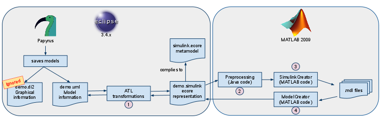
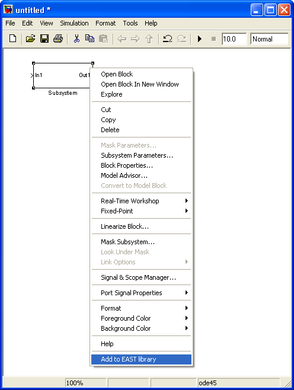
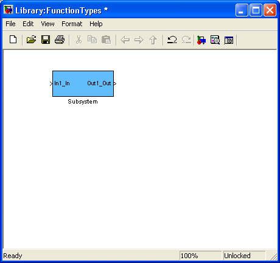
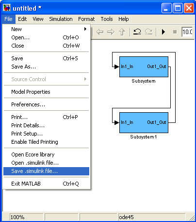
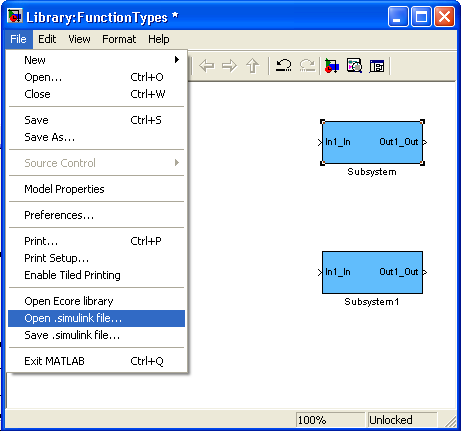

| KTH to
MATLAB/Simulink <-> Ecore exchange plugin |
|
The Simulink
<-> Ecore exchange plugin
Introduction
This tool
was created by KTH during the ATESST2 project. It enables
MATLAB/Simulink to save and load files in Ecore format, conforming to a
meta-model defined in Ecore. This enables the use of model
transformation languages to transform the model into other models. In
our case, the target has been UML models, with the EAST-ADL2 profile
applied.
Overview
This tool loads and saves Simulink Ecore files, conforming to
a meta-model defined in Eclipse. The file extension for this filetype is
.simulink
. The tool only consider blocks that has been selected by the user,
using the Add to EAST
library mechanism, described below.
The tool was
originally designed to generate an Ecore representation that could be
translated into a UML file, as in the picture below, but it should be
possible to use it for other transformations as well. Having simulink
model files described in Ecore allows transformation using many
different model transformation languages.
In
this case, the ATL - Atlas Transformation Langugage is used for the
transformation to uml, see (1) in the picture below. This is carried
out in Eclipse, using a plug-in that is installed separetly. From the
simulink ecore metamodel that is defined by us, code is generated.
There is also some Preprocessing Java code, that is linked
into MATLAB.

Installation
If you are reading this file, you probably already have run the ecore_init.m file.
This must be done every time you start MATLAB and want to use Ecore
exchange, so you could consider putting it into your startup.m file.
Back to Top
The Function Types
library
The exchange mechanism uses the library mechanism of
MATLAB/Simulink. However, you can not use any library, the tool is
today "hard-coded" to use the FunctionTypes.mdl library. Moreover, the
blocks in the library must be added using the Add to EAST library context
menu. MATLAB will use the FunctionTypes.mdl
file availabe on the path, a sample file is provided in the /code
directory, which is used if there is no such file available e.g. in the
current directory. This way, you should be able to use a common FunctionTypes.mdl
file for many different models, which also could be placed in different
directories.
Back to Top
The Add to EAST
library menu
As mentioned earlier, the Add to EAST library context menu option is
important. When clicking it, many things will happen:
- The FunctionTypes.mdl
library file is opened.
- The block is added to the library
- The block gets a unique ID (UUID).
- The ports get a suffix (e.g. _in for Inports), and UUIDs
are also assigned to ports.
- The original block is then replaced by this new block. To
show that this conversion has worked out fine, the colour of the block
is changed to light-blue.

The resulting block in the FunctionTypes library. Note the added
extensions to the ports (and the light blue colour).

This is today only validated for subsystem blocks.
Back to Top
Using the Save .simulink file... menu
In the picture below, two empty subsystems are created as described
above, and connected using lines. They can be saved using the Save
.simulink file... menu option, which is added by the tool. After the
filename is entered,
- Only blocks that belongs to a FunctionTypes.mdl library file are considered.
- Only
lines that are connected to at least one port of a FunctionTypes.mdl
library block are saved. The graphical information of the line (i.e.
the routing) is not saved.
- The model parameters, e.g. solver parameters, are not saved.

Back to Top
Using the Open .simulink file... menu
The Open .simulink file... menu loads a .simulink file into memory. Some things are to be noted:
- As
mentioned above, model parameters and routing are not transformed back.
Default parameters and line autorouting are applied to the model
- The position of the blocks are saved. Newly added blocks will be layouted using a basic scheme
- The name of the created model will be the same name as the original model which in this example is Untitled,
and not the filename of the .simulink model. If a model with that
name already exist in memory (e.g. your old model), it will fail to
load.

Back to Top
Concluding remarks
This
is to be considered as prototype software, which means that
some checks of , and may give cryptic error messages. It is
open-sourced, which allows potential users to improve the code, and
adapt it to fit their purposes. The major conclusions that can be drawn
from this tool are:
- We have shown how the library mechanism,
combined with the use of UUID tags can be used to identify blocks in
both EAST-ADL and Simulink, and succesfully round-trip transformation.
- The
user can alter the Ecore meta model to fit their purposes, if e.g. more
detailed versions of blocks is needed, or non-library blocks
will be used. For instance,parameters of the library block are not stored today, this could be changed in a future version, to allow parameterized blocks.